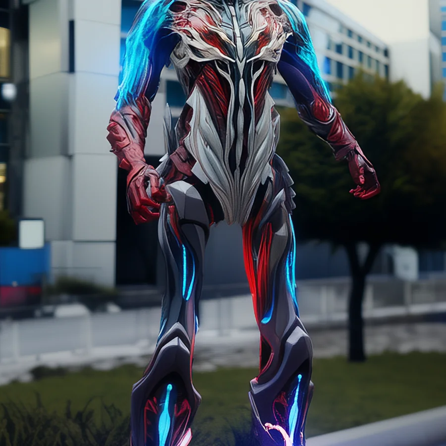
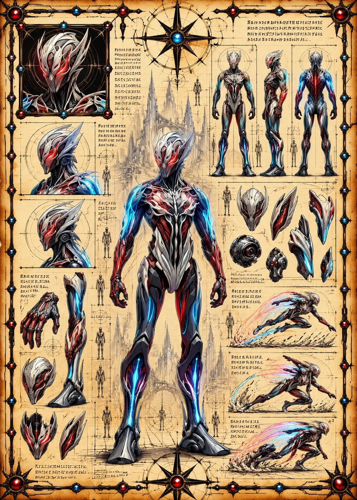

©
©
GENEZYS ARCHIVE · Earth 2 · Synthbot
Evalio
Circuit Sovereign


Archive record
Evalio is the reason the Mortis Syndicate does not fear death. The Protocol Breach reaches into the circuits of a fallen ally and makes it fight one last time. On Earth 2, they say Evalio's pilot keeps a copy of every Synthbot that has ever fallen.
Combat signature
Protocol Breach
100 Cosmara
390 Animus
310 Vitalis
Vents coil with recoil: Performs special of 1 dead ally.
Genezys 04:07 ™&©2026LEGIONS
Return to LEGIONS